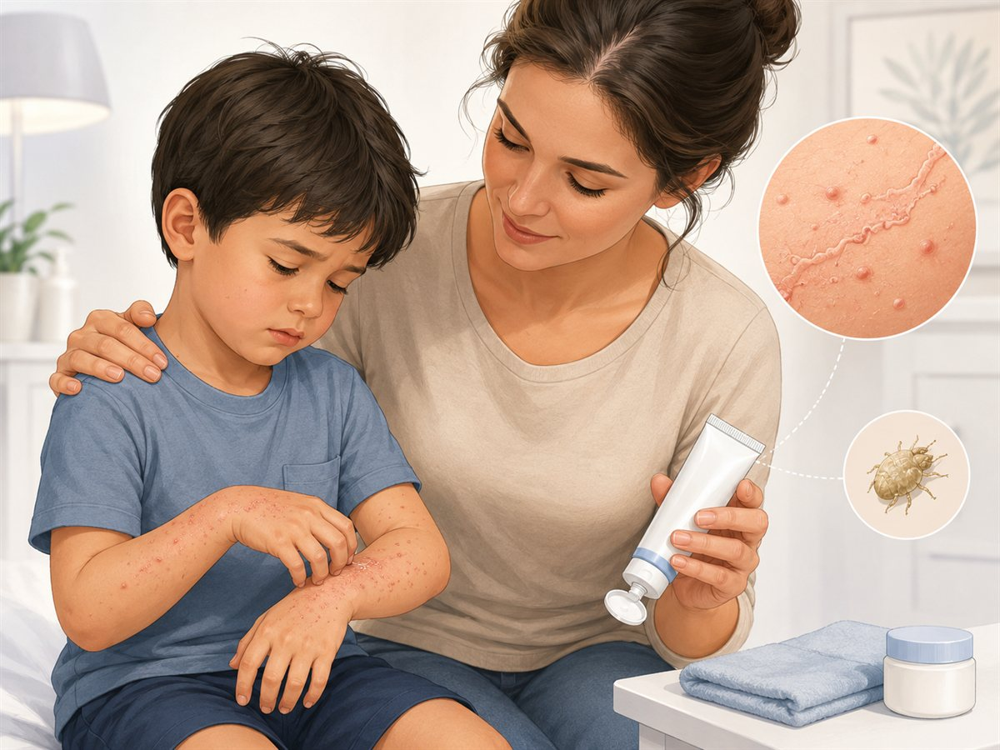

Reassurance for parentsScabies is a very itchy rash caused by tiny mites. It is common, treatable, and does not mean poor hygiene.

Illustrative parent-education artwork. Medical text verified using approved paediatric sources. Final clinician review recommended.
What is Scabies?
Scabies is an infestation of the skin by a tiny mite called Sarcoptes scabiei. The mites burrow into the skin and cause intense itching and a rash.
Symptoms & Signs
- Very itchy rash, often worse at night
- Small red bumps or scratch marks
- Common sites include wrists, hands, finger spaces, waist, groin, and ankles
- In babies, the scalp, face, palms, and soles may also be involved
Causes
- Spreads by close, prolonged skin-to-skin contact
- Can spread through shared bedding, clothes, and towels within the household
- Itching is caused by the body’s reaction to the mites and eggs
Home Management
- Use scabies treatment exactly as prescribed, usually for all household members at the same time.
- Wash recently used clothes, towels, and bed linen as advised.
- Trim nails and discourage scratching.
- Remember that itching may continue for some time even after successful treatment.
- Repeat treatment may be needed if your doctor advises it.
Red Flags / When to Seek Help
- Signs of skin infection such as pus, increasing redness, or pain
- Very young baby or child with widespread rash
- Persistent symptoms after correct household treatment
- Unclear diagnosis or severe eczema-like rash
Important Facts / Myth correction
Scabies is not caused by poor hygiene.
The whole household often needs treatment together.
Itching may continue for 2–4 weeks even after the mites have been treated.
Legal medical disclaimer
This parent guide is for education only and does not replace a medical consultation, diagnosis, or treatment plan. Advice should be interpreted in the context of your child's age, symptoms, and medical history. If your child has worsening symptoms, breathing difficulty, dehydration, unusual drowsiness, persistent high fever, seizures, or any emergency warning signs, seek urgent medical care immediately. All final guides should be reviewed by a qualified medical professional before clinical use.
References
- Royal Children’s Hospital Melbourne. Kids Health Info: Scabies symptoms and treatment. https://www.rch.org.au/kidsinfo/fact_sheets/Scabies_symptoms_and_treatment/